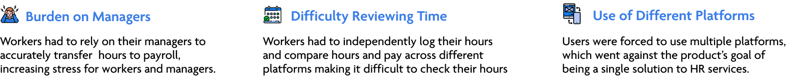
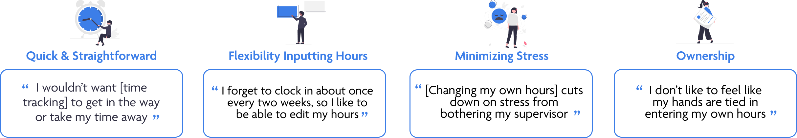
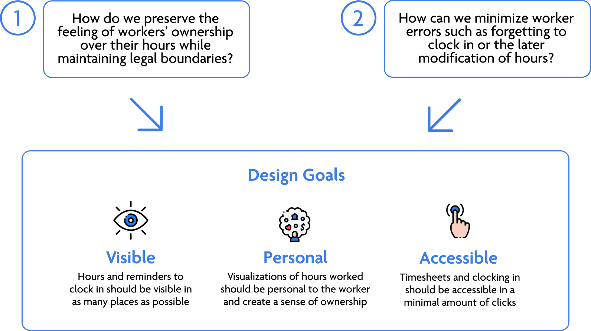

Overview
Band of Hands is an HR startup based in San Diego working to
make employment easier for both small businesses and workers.
It provides flexibility to companies and workers by being a
single solution for onboarding, time, attendance, HR, and payroll.
Over the summer, Band of Hands was at a pivotal moment when
they were finding more clients, onboarding more workers, and needed to expand
product functionalities. One such functionality with increasing demand was a time-tracking
system for workers.
Why In App Timetracking?

My Contributions
I worked with the entire team to understand the
product's goals and design a time-tracking user flow on the worker mobile app.
I advocated for user research, successfully conducted interviews,
and created high-fidelity mockups that I then communicated to developers resulting
in the implementation of my designs, and the beginning of a product expansion
that is still continuing now.
User Research
I began by discussing customer feedback and needs with
the Customer Success Manager to identify key user groups
(which were typically separated by the number of jobs being worked).
Despite the short time frame of the project, I was able to
interview multiple users about their experiences with time-tracking platforms,
and what they would like to see moving forward.
Research Insights

User Personas & Empathy Maps
From the research and conversations with the CSM,
I developed two empathy maps representing two different groups of users and
how they approach their time-tracking.
A Legal Road Bump
After presenting my findings to the product owners,
I found out that we could not allow workers to freely change their hours due
to legal restrictions. This presented a significant challenge for fulfilling
users' needs for flexibility and ownership.
Moving forward, I made sure my design addressed two main
questions this conflict created.

Final Designs: Simplifying & Going Deeper
After iterating on my early designs, I finalized the high
fidelity mockups, making sure they worked to solve the main problems I identified.
I worked to simplify the process and add a few features for greater ease of use.
Clocking In & Out: Dashboard Widget
- Widget appears as you first open app, a reminder to clock in and out.
- Displays when you last clocked in.
- Displays the hours worked so far that day.
Clocking In & Out: Motion Indicators
- Pulsing green dot and a running timer moves to attract the worker's eye.
- Appears on both the dashboard and job details page.
- This feature aims to prevent forgetting to clock out.
Clocking In & Out: Select Job
- Drop-down on dashboard widget lets users easily toggle between their jobs.
- I chose a dropdown over my a carousel to minimize looking for jobs.
- The job displayed when you open the app is whichever job was
last worked, and jobs are ordered by what was most recently selected.
Reviewing Hours: Summary View
- The timesheet has three different views: daily, weekly, and pay period.
- Displays last selected view to preserve worker preferences.
- Takes advantage of worker's different preferences to make time-tracking feel more custom to an individual worker's needs.
Reviewing Hours: More Details
- Displays individual clock-ins per day,
week, and pay period.
- Can select current and previous pay periods.
- Provides a record of their work history to make reviewing time easier.
Next Steps
While the clocking in and out flows for both the dashboard
and job details have been implemented, there is still more work to be done!
- Designing the flow for modifying incorrect time punches
- Adding a calendar view to see hours worked for multiple jobs
- Creating a status indicator that shows when workers have modified their hours
- Determining how to deal with missed breaks and reporting injuries
- Allowing for sick time or vacation requests
Reflections
In many of my prior projects, I felt that I could be both a user
and designer. However, in designing for worker's timekeeping, especially for users
with multiple jobs, I had no prior knowledge of that experience and it was really
important to learn from the team and users in terms of what they needed and wanted
to see.
I was also presented with the new challenge of being limited by
legal restrictions, as well as having to communicate my designs with the developers.
These challenges pushed me to grow as a designer and come up with solutions I
would not have immediately arrived at otherwise.
Being able to see my designs implemented for the clocking in and
out on both dashboard and job details page has made this project even more rewarding,
and I've really appreciated the opportunity to work at Band of Hands!